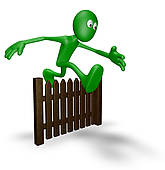

MY FIRST GAME

BEAR CHOMPER

The game that I created with my partner Cathy Pham is called Bear Chomper which allows the hungry bear to catch falling decent food such as tacos, cheetos puffs and muffins to eat. But decent food was not the only thing falling from the sky, inedible thing such as insects and mouse were falling as well. The bear however has five chances to avoid the disease or he will die. With given tips offered in the scratch website, our game started off as simple until we started to enhance it by adding effects, obstacles and lives. I believe the hardest obstacles that my partner and I encountered was how to make levels such as easy and hard and how to literally end the game after the lives has hit 0. Opportunities we have taken advantage was that we added was more food for the player to gain points and bad things that will end the game. I like how we had lives in our game so we can feel intense and in competition. In the process of making the game, we were able to fiddle around the settings to see how it will help influence our game such as creating pictures in the costumes section and creating varibles. We also learned how to make the food forever dropping from the sky at random spot which results points in the scoreboard and control the speed of how fast the objects was falling
THE ESCAPE
The Escape is about a person who who was kidnapped in an alley and had to make life decisions to escape his captor house. Any wrong decisions he make in that house will result a death penalty. So choose wisely. The making of the interactive story The Escape was quite simple considering the fact that the code is repeated over and over but with different scene. I have come to think of the code as a chain where one code or scene will lead to the next. I had to find out how to make a code when a player makes the wrong decision and wants to start over. My partner and I called this code restart. I have encountered a problem in the game when I was finished writing the code. It seems that it would print out my story in my terminal until I figured out that I had to write intro() declaring it as a main function rather than a child function. Making this interactive story was definitely easier than making a game because it lacks action and more reading. I like how writing the code reminds me of a chain where one part leads to the next and I have total control of how the story was going to play out. I dislike how writing the code makes me confused because you had to find out which decision would lead to this event. It's difficult when your story is long. I can't remember the name of the particular story that I liked but I do remember the events occured when the lights switched off and on a person would end up dead. Someone was apparently killing off every person one by one. This story gave me a feeling of horror, suspense and a tint of romance which I love. To be honest, if I had a chance to start over, I wouldn't change anything because I believed the events in my story waa interesting and adventurous. I definitely think that I would like to improve my grammar a little bit.